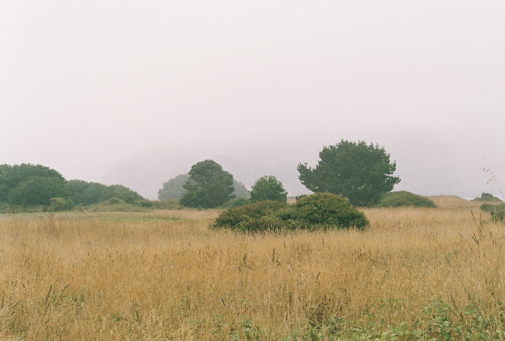
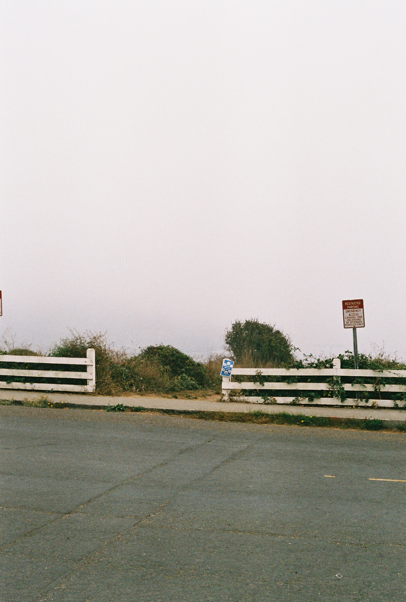
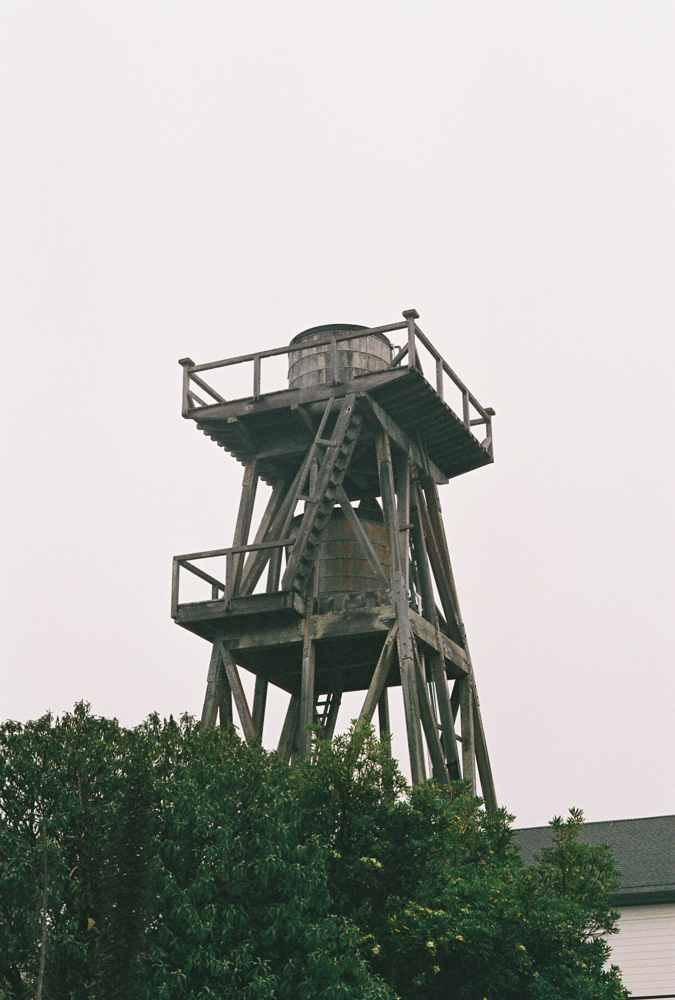
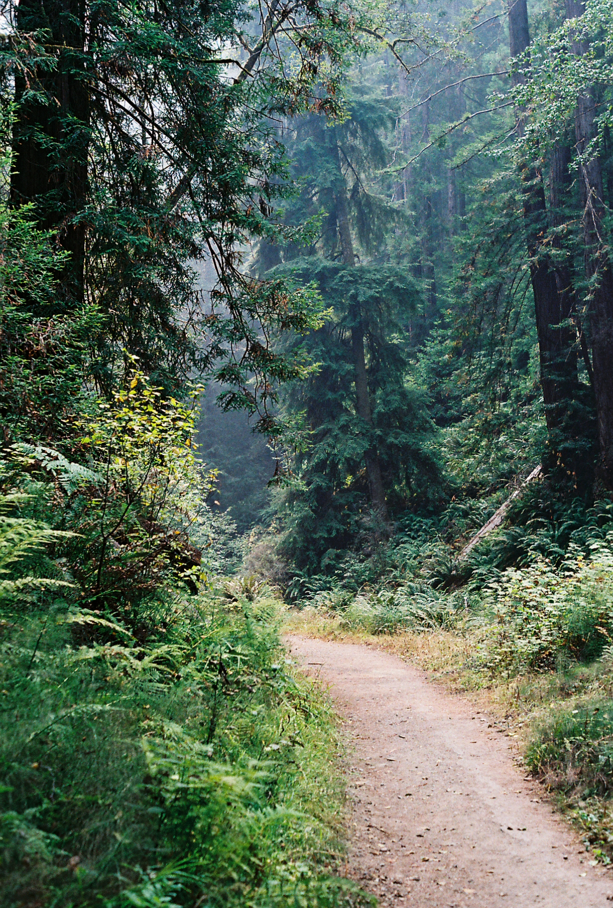
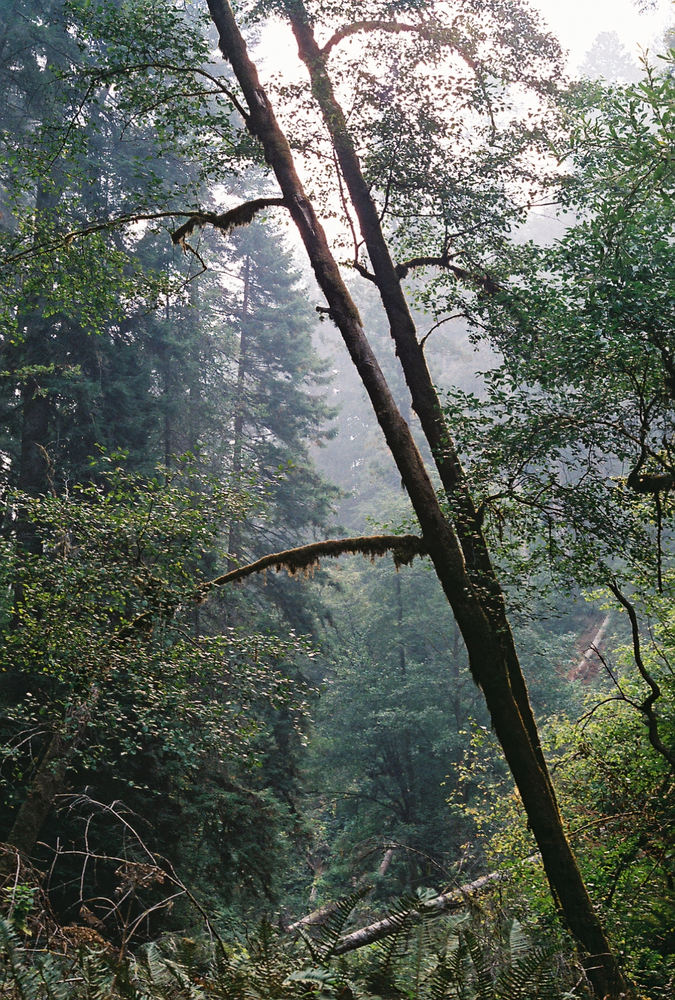
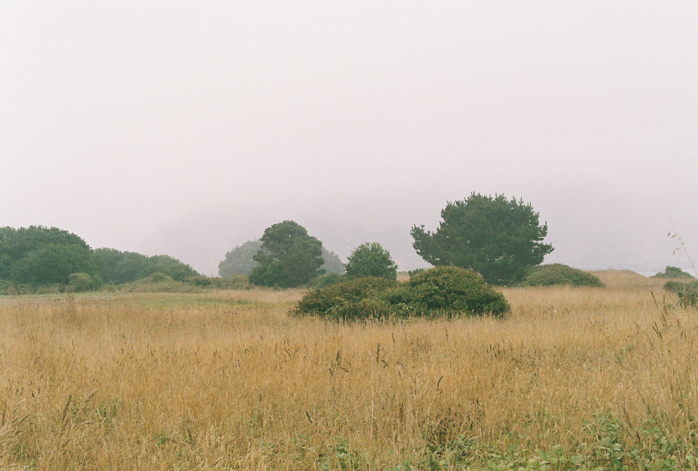
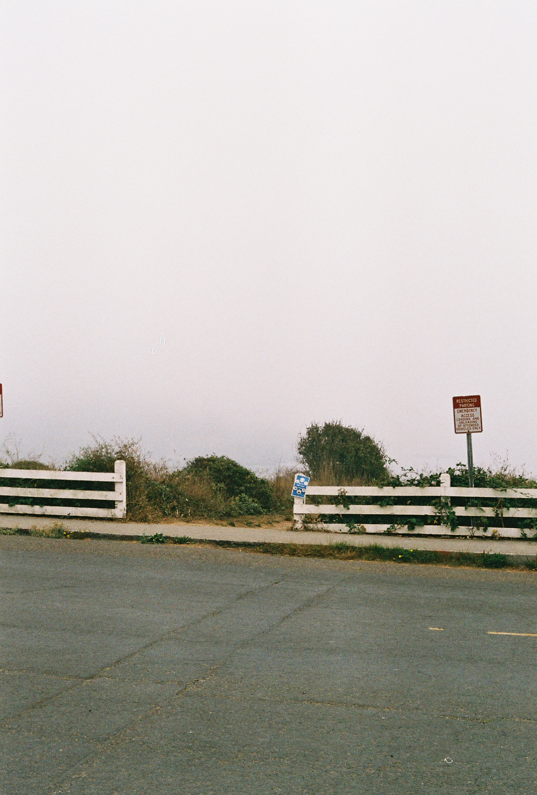
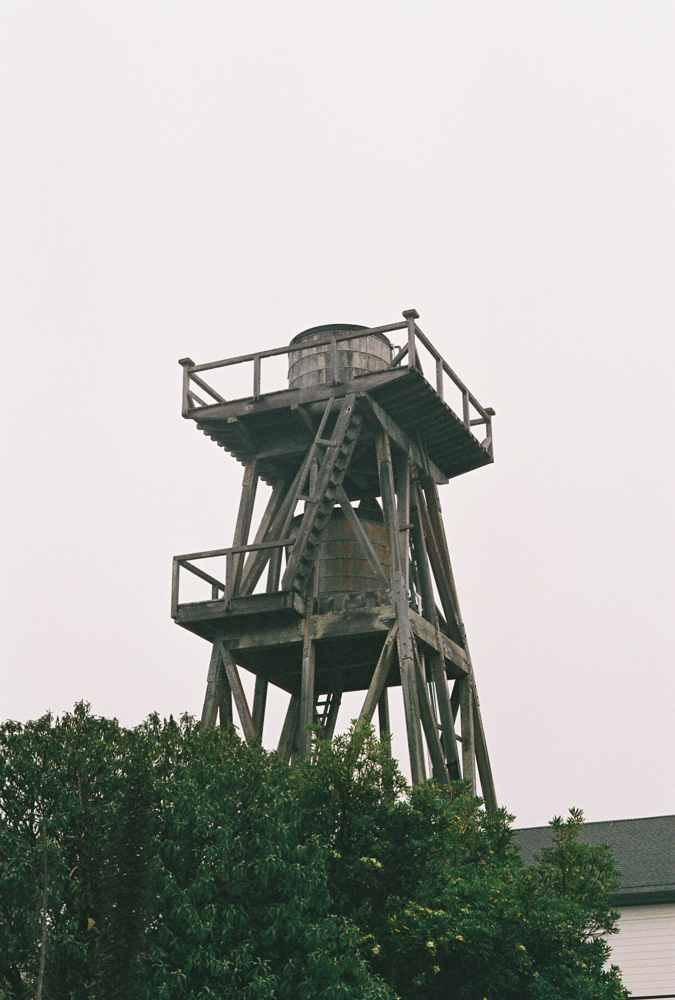
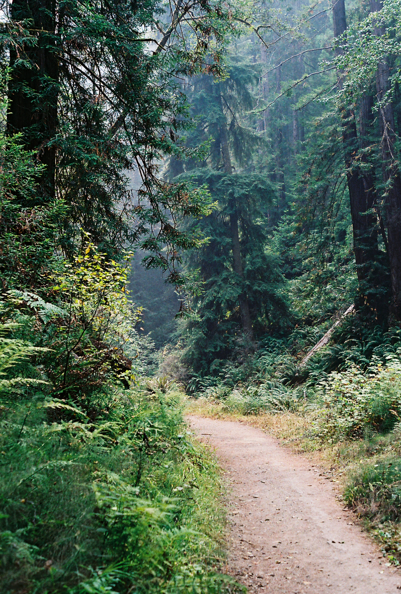
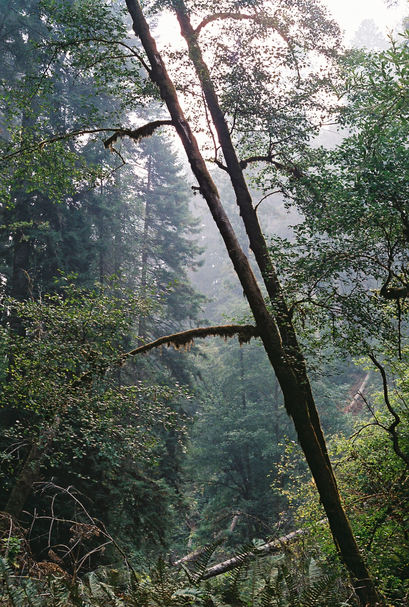

Challenge Statement
The challenge was to capture the serenity and natural preservation of Mendocino through film photography.
WHY
I chose to capture scenes with a foggy sky and no human presence, to create a mystical, nostalgic and peaceful feeling reminiscent with “serenity.” Also, I targeted scenery with heavy earth and ocean tones to demonstrate the immaculate preservation of the environment.